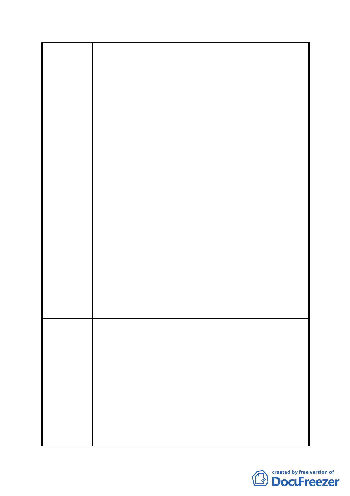

就有關台北市政府工務局水利工程處計劃設置「辛亥國
中預定地雨水貯留池」案陳情如下：
一、 我等家族在興昌里居住近30年，興昌里未曾淹過水，
即使63水災造成那麼大災害，僅在辛亥隧道口也只約
30公分的積水且於與些積水即退去。政府在現今財政
困難下，不能隨著某些政治人物的企圖任意浪費公帑
而破壞原生態。如按水利工程處如此思考邏輯（隨意
設置雨水貯留池）那在96年七月間颱風帶來強烈西南
氣流造成福興路淹水，那工程處是否也應在福興路開
挖個雨水貯留池，另於96年10月間科羅莎颱風帶來之
豪雨，興昌里亦未見積水現象；政府建設應著重在橫
向協調與規劃，不能以頭痛醫頭、腳痛醫腳方式來治
陳情理由
理水患，應予作整體考量，從疏通水溝及加強溝渠建
設來疏導雨水排放。
二、 辛亥路段屬地狹人稠又緊臨大片山坡地，迫切需求的
是大型停車場而非綠帶公園，如真有設置雨水貯留池
之必要，應於辛亥隧道口捷運橋山坡下設置，用以就
近收集隧道口周邊山坡雨水，並在貯留池上加蓋停車
塔，一舉解決興昌里民臥龍街一帶居民停車問題及第
二殯儀館在「好日子」時將車輛導向停車塔，動用區
間
三、 辛亥路萬美街一帶地處台北盆地邊緣，文山區獨缺商
業性大樓，在現今人口成長率零成長下，蓋國中學校
已非迫切需要，應予規劃為商業區配合捷運辛亥站之
經濟價值，用以繁榮文山、萬芳地區之商業活動及就
業人口。
四、 綜上所述：
（一）依水利工程處所提計劃設施不符經濟發展需求亦不
符社區所需，且疏洪池建設未必能有效的改善地方淹
水問題，再者文山區也只有兩個地方會淹水，不需要
那麼昂貴卻不能實質幫助里民之設施。
建議辦法
（二）該建設計劃未確實的說明闢建後的「維護經費」來源
以及「管理方式」，按其規劃地區附近並無住家，學
童及婦女經過大片公園及保護區地帶孔會造成渠等
人身安全；在沒有實質的管理計劃之下恐會變成蚊子
館和流浪漢的棲身之所造成治安死角。
（三）再者，整個計畫對周邊土地缺乏整體性規劃，淹水了
就蓋疏洪池，那缺錢可以蓋個金庫嗎？建請主政者應
- 26 -